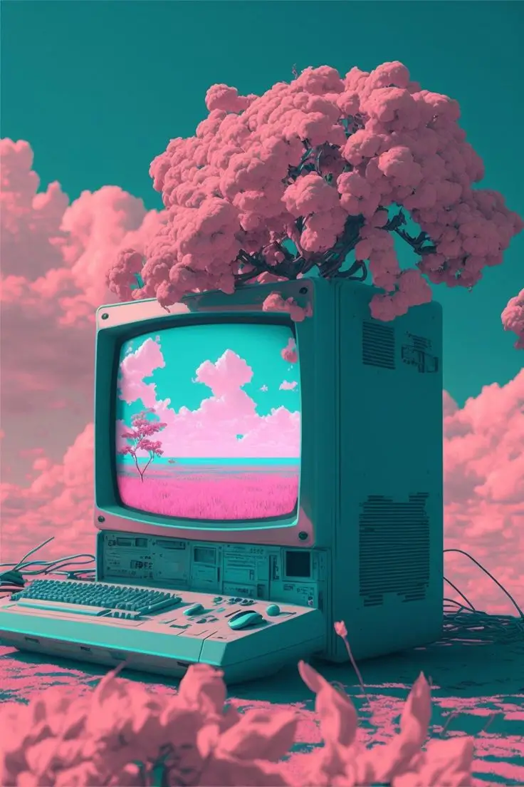
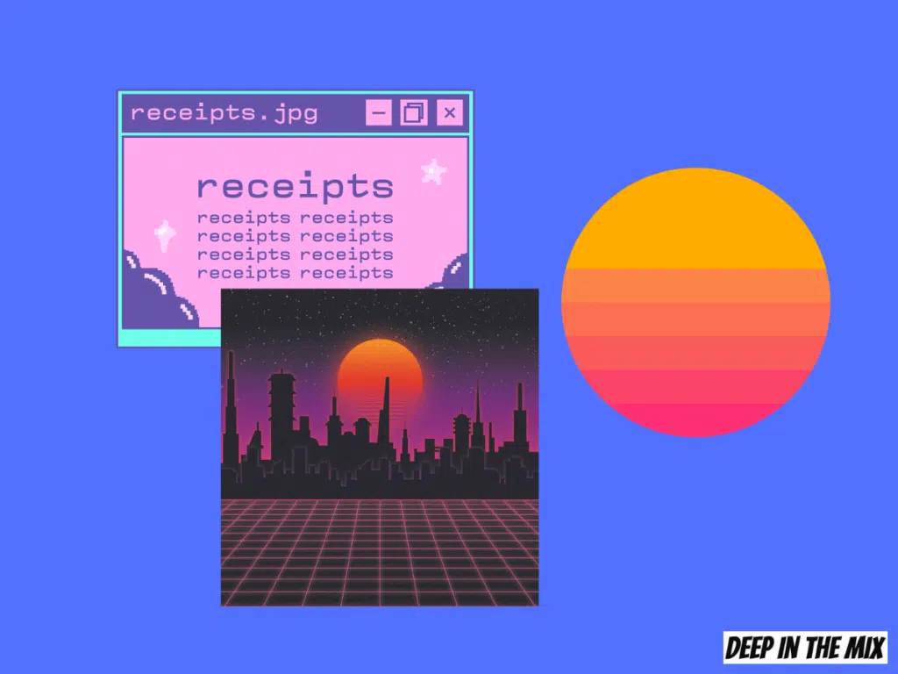
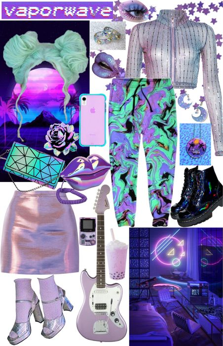

El vaporwave, nacido en la década de 2010, fusiona la nostalgia de los años 80 y 90 con una visión futurista, manifestándose tanto en la música como en el arte. Este género se sumerge en la estética de la era digital, destacando la ambigüedad temporal y la desconexión cultural. Utiliza samples de música comercial, distorsionándolos para crear una experiencia sonora única. A nivel visual, el vaporwave se inspira en la estética kitsch, con colores neón y elementos surrealistas. Este fenómeno cultural refleja la intersección entre la tecnología, la memoria y la crítica social, desafiando las nociones tradicionales de progreso y autenticidad. Con su enfoque irónico y reflexivo, el vaporwave se convierte en un medio expresivo que cuestiona la aceleración tecnológica y la obsesión con el consumismo, ofreciendo una reinterpretación única de la cultura contemporánea.

Explora el Vaporwave
Música
Descubre sonidos únicos que fusionan samples retro con una producción moderna.

Arte
Explora expresiones artísticas que juegan con la nostalgia y la estética visual de los 80 y 90.

Ropa
Viste con estilo retro-futurista inspirado en el vaporwave.
Historia y Relación con los Años 80
El vaporwave surge como una respuesta artística y musical a la cultura de consumo de los años 80,
utilizando samples de música y elementos visuales para crear una experiencia que reflexiona sobre la
nostalgia y el impacto de la tecnología en esa época.